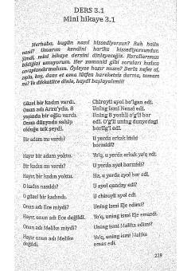

31Turk tilini o'rganuvchilar uchun o'zbekcha tarjimasi bilan qisqa hikoyalar to'plami.
Ushbu qo'llanma turk tilini mustaqil o'rganuvchilar uchun mo'ljallangan bo'lib, unda qisqa hikoyalar va ularning o'zbek tilidagi tarjimalari hamda mashqlar berilgan. Matnlar o'quvchining so'z boyligini oshirish va o'qib tushunish ko'nikmalarini rivojlantirishga xizmat qiladi.